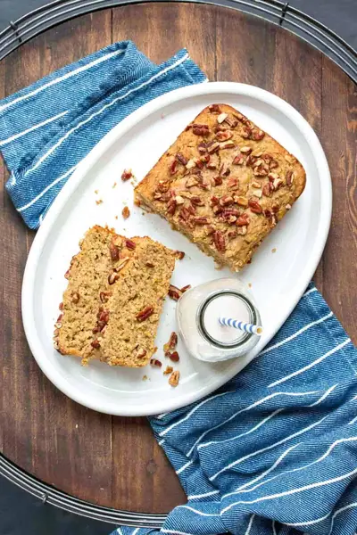

Gluten Free Dairy Free Zucchini Bread

Ingredients
- 1¼ cup oat flour
- ¾ cup almond flour
- ¾ cup cane sugar (see note)
- 1 tablespoon baking powder
- 2 teaspoons cinnamon
- ½ teaspoon sea salt
- 1½ cups grated zucchini (squeezed with a paper towel (about 2 zucchini, see note)
- 2-4 tablespoons dairy free milk (I used cashew (see note)
- 3 tablespoons unsweetened apple sauce
- 2 tablespoons apple cider vinegar
- pecans or walnuts (to top (optional)
Steps
- Preheat oven to 350 F/ 175 C.
- Put flours, sugar, baking powder, cinnamon and salt in a bowl. Whisk well to remove clumps and combine.
- Make a well in the middle and add the zucchini, milk, apple sauce and vinegar. Mix to form a thick batter. It may seem dry at first, but keep mixing. The zucchini will add moisture as you mix it and it will turn into a thick batter.
- Pour into a prepared loaf pan (I use a little coconut oil spray and rub it around). If you want, you can top with some nuts.
- Bake for 36-40 minutes. Until the top is browning and a toothpick comes out dry with crumbs on it. If you use a glass pan instead of a metal one, it may take longer.
- Allow it to cool completely. I leave it on the counter for a few hours before cutting. If you cut too soon then it will be gummy and mushy. You can also put it in the fridge.
Recipe by Anjali Shah, from The Picky Eater. Saved here for personal use; the original has the full notes, tips and photos. Open original